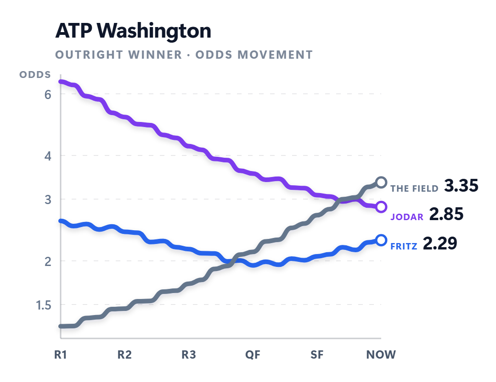

Read the match
Model-backed win probabilities and a fair price for the matchups that matter, with the surface, form and fatigue behind them.
What lands in your Telegram →A research-driven framework that shows how disciplined bettors analyze probability, risk, and market movement to make structured tennis betting decisions.

Most people lose because they bet on everything. The method here goes the other way.
Model-backed win probabilities and a fair price for the matchups that matter, with the surface, form and fatigue behind them.
What lands in your Telegram →A price higher than the matchup deserves, taken before the line moves. When the edge is not there, you hear that instead.
See a week inside →Results tracked in the open and a staking plan sized to your bankroll, so the discipline does the compounding.
Hear from members →No app to install and no dashboard to remember. The reads arrive where you already are, and you can act on one in the time it takes to read it.
The no bet days changed it for me. I finally stopped chasing every match on the schedule.
I bet a third as often now and I actually understand why. It reads like a method instead of a habit.
Telling me when to sit out is exactly why I trust everything else you send.
Both bill once a year. Silver is the calls. Gold adds the models behind them, the courses and the insights.
Around €33 a month, billed yearly
Around €50 a month, billed yearly
We do not promise profit, and nobody honest does. WaveHub is analysis and consulting. You get the reads, the value and the discipline. How you manage risk stays with you.
No. WaveHub is an analysis and consulting service. No money is staked, held or moved through us. We sit on your side of the line, not the house's.
No. If you are willing to be patient and follow a plan, we take you from the fundamentals to reading value properly. The patience matters more than the starting point.
Few, and only when there is something worth backing. Some days there is nothing, and you will hear that plainly instead of being handed filler.
An edge comes from depth, not breadth. One tour followed properly beats five followed casually, and tennis rewards the work: surface, form and fatigue are all readable.
Pick Silver or Gold above and complete checkout. You then get your access to the members' group on Telegram, where every read is posted. There is nothing to install and no extra account to keep track of, on any device you already use.
Yes. A membership runs for the term you pick and you can stop at the end of it. Your right of withdrawal is set out in full on the withdrawal page.
Read the few matches that matter instead of betting the ones that do not.